United Airlines Boeing 777-200ER Chicago to Hong Kong and Back, Summer 2018
It was a trip to the other side of the tunnel after a visit/stay at the United Club. That’s ok because the tunnel was nice.
The plane was towed in quite late at probably twenty minutes before boarding (hah). Which made flight attendants happy (frankly everyone). Aircraft tail was N228UA, nose #2828, a stalker because I flew this plane the reverse route last winter.
Boarding was definitely late by probably half an hour, so that was extra time spent in Group 2. Not funny. With a new boarding method that I didn’t understand with this particular gate, but at least people weren’t lining up everywhere or crowding at the gate. No feedback was given.
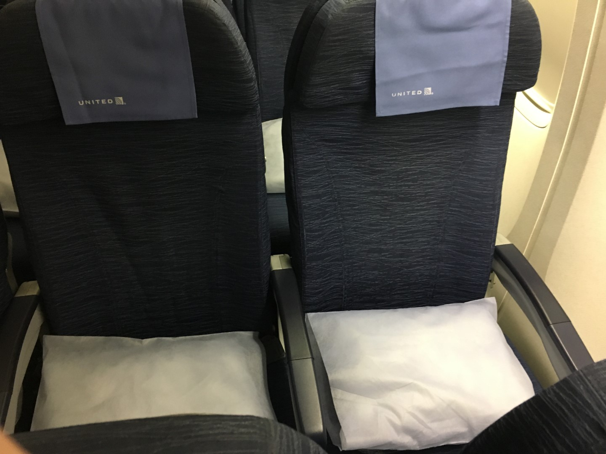 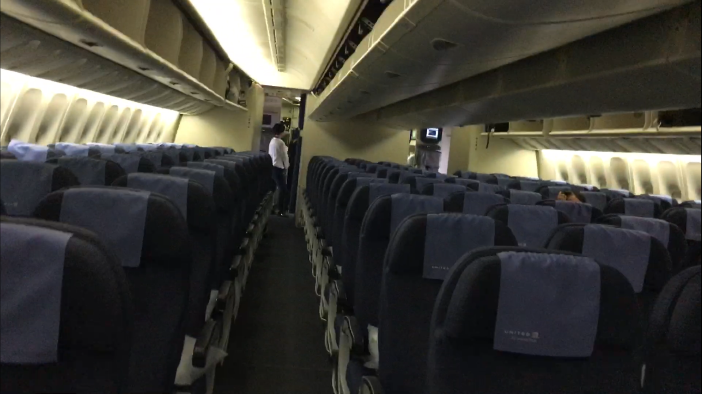 Old cabin. Some screenshots from my video, and definitely some pictures of my seat. With a blanket and pillow already positioned. Some pictures were from my return flight, but the seats are the same. Width of the 3-3-3 seats was 18.1 inches.
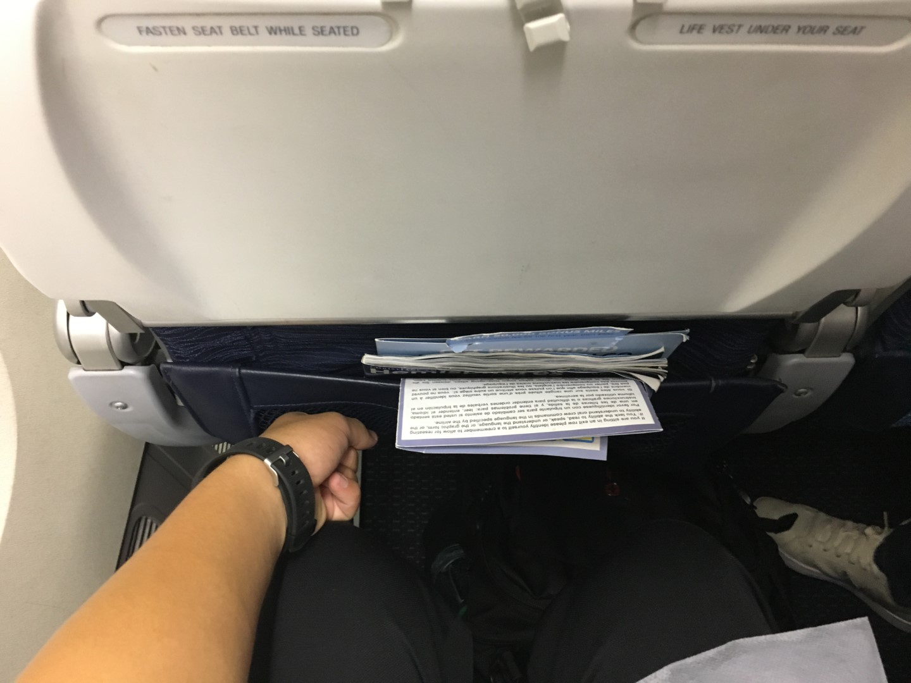 Pitch was 31 inches (though I don’t have a measurement), here’s my fist showing my initial sitting position, but definitely not halfway through the flight. Selecting 31” instead of 32” prescribed by Boeing for the similar configuration with lavatories in the back (minus the center section). It’s page 25 of this document link. If you haven’t realized by now, I’m saying how I don’t understand why you wouldn’t go with 32” when you can’t really cram another row in by removing an inch from each seat.
Air vents and lights provided.
Here’s the view, by the way, with a sistership to Tokyo Narita (N225UA, nose #2025 operating UA881). UA881 departs before UA895, but definitely not too much earlier thanks to the delay we just took.
Now, we got another plane getting towed in (Boeing 767-322ER, tail N660UA nose #6460) for a flight to London/LHR, taking the spot that was just vacated with the Boeing 777 to Tokyo – Narita, gate C20.
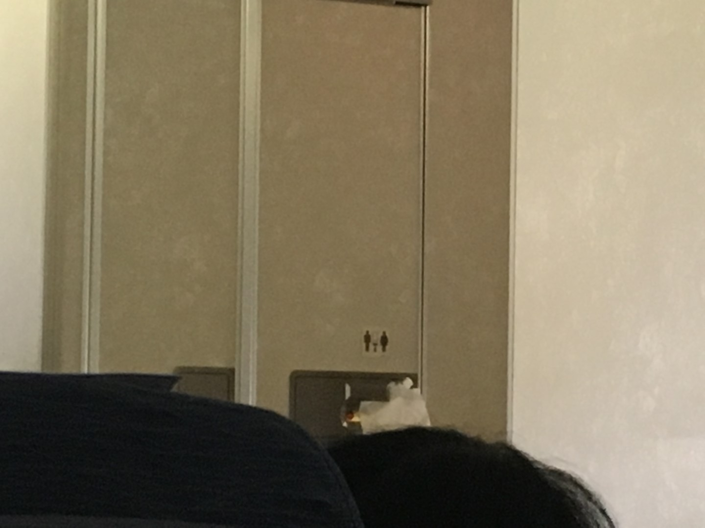 By the way, this is how they secure the lavatories for departure (me guessing it’s so that it’s easier for the flight attendants to unlock the door from the outside).
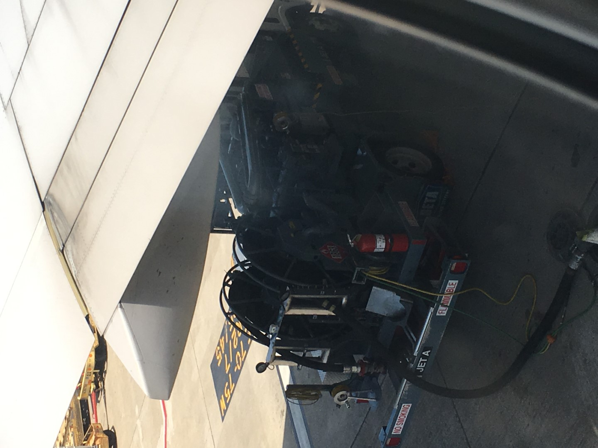 This coming before we just took another delay with what the Captain described as “refueling and paperwork”. At least this flight no longer continues to Singapore, maybe? So I’ll be making some more calls I guess? Oh, it was a rolling delay, but only by 10 minutes, and it wasn’t even that bad, being a total of 23 minutes. We should make some of that up. By the way, this is a fuel truck just below the flap track fairing (the pod/pylon thingy).
Here’s the flight status page taken after the delays was announced, by the way. Delays happen, more often on this flight than it seems. Courtesy of the United App.
 I didn’t even bother with the provided screens. I just plopped my phone on my hat with a TV show that I was watching before the flight.
I didn’t even bother with the provided screens. I just plopped my phone on my hat with a TV show that I was watching before the flight.
There’s a drinks and pretzel service before the meal.
Pretzels were ok to snack on.
Meal had two choices, pasta or chicken with fried rice. I had the latter, so did my seatmates. Served on a plastic blue tray.
Here is the entrée. Chicken with fried rice.
I had Ginger Ale to drink, full can with cup of ice was given. This is the new standard for meals? Because I don’t recall the last time, I got the full can with any drink service before today.
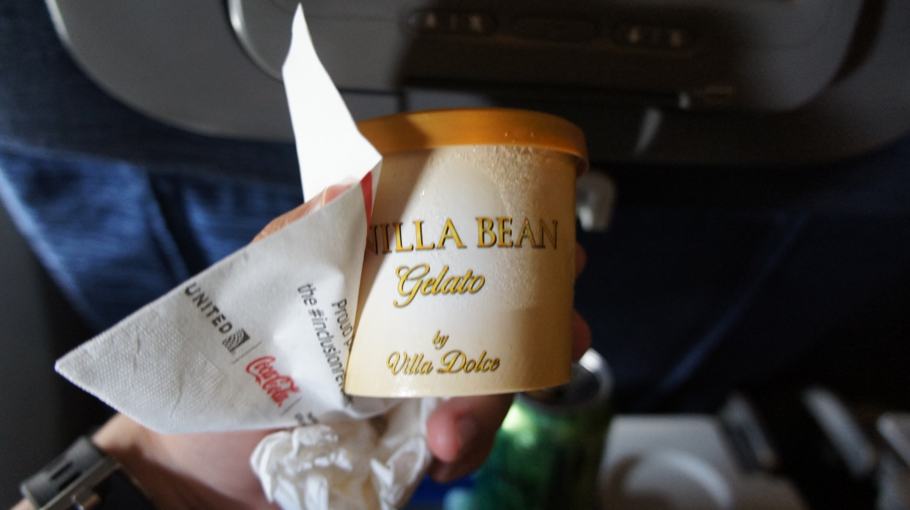 Vanilla gelato was given, thankfully not sorbet.
 Water too.
Water too.
Here’s the screen, I just choose a random movie. I don’t know if the bar actually works or not, I just thought of it now. At least they’re going away, but there’s a caveat with the seats.
Here is a pen to measure the screen. The pen is not very long, probably around an inch shorter than the #2 pencil. Not good.
Darkened cabin from the back.
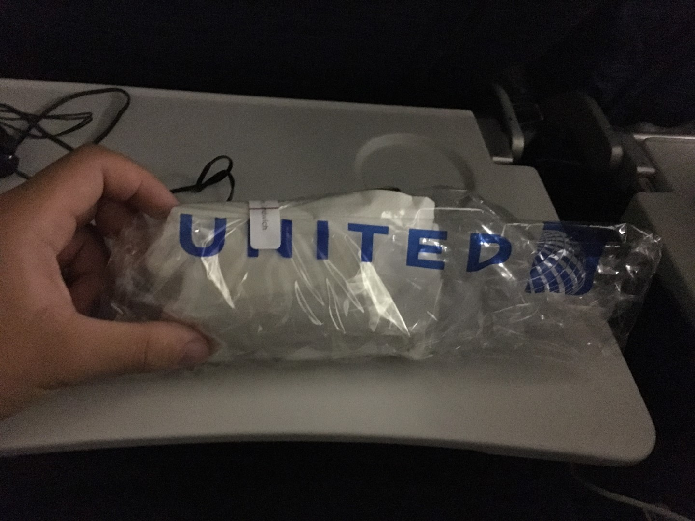 Second food service was a midflight snack.
Sandwich and M&M’s, both small in size. “Fun” sized M&M’s.
It was a few slices of supposedly turkey and a slice of supposedly swiss. Whether this is true, I do not know.
I had an orange juice to drink.
Bag was useful though.
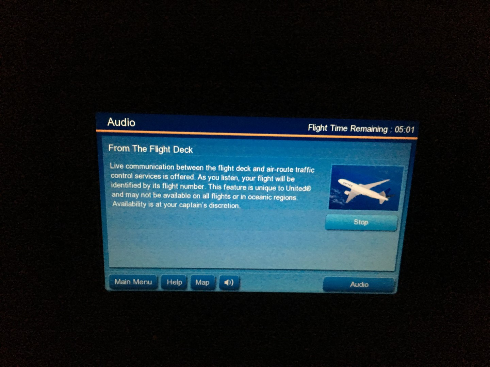 From my experience, “From the Flight Deck” (the famous Channel 9) never actually has anything?
Safety card works for the many subfleets of this particular plane in this particular configuration, as while there are the same number of seats with the same type of seats, there’s certain differences between the three with crew rests, at least that is my understanding.
We all had breakfast for dinner. Just say it’s fun for now. Choice of pancakes or eggs “skillet” and comes with pineapple and grapes. And eating with my fingers because silverware (plasticware) was missing on my tray… yes, yes, I sanitized my hands first with hand sanitizer. Always bring some.
My seatmates had the “skillet” …
I had the pancakes. Quite fluffy.
Came with fruit, as I said earlier.
I had water and coffee.
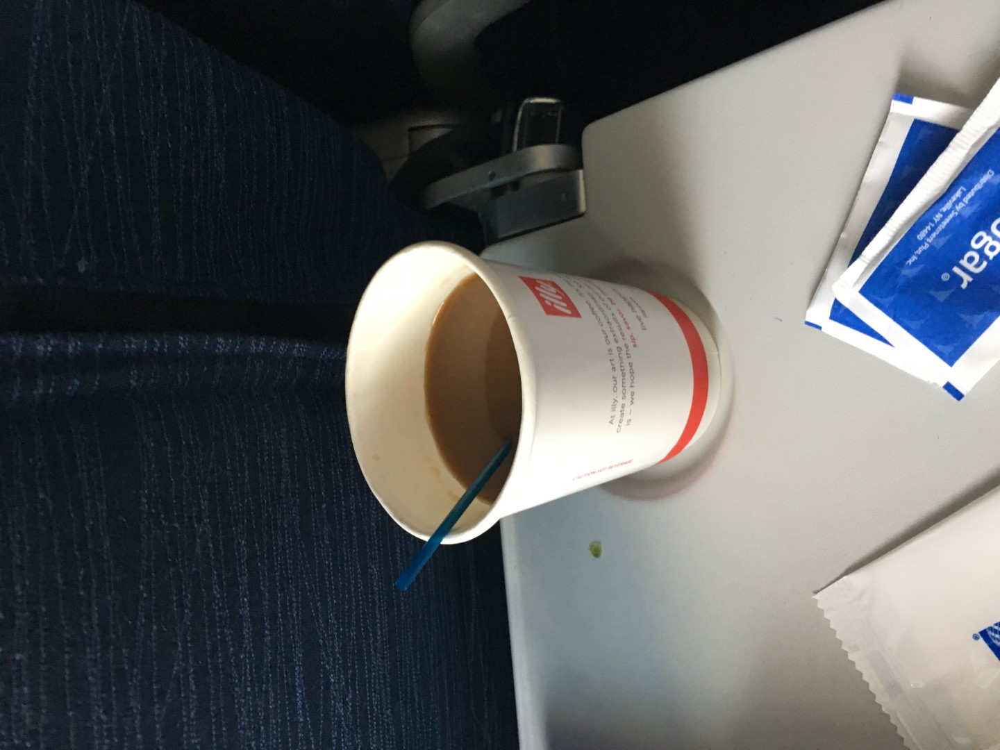 Second cup with milk mixed in, not per my request, but whatever.
View of Wuhan.
The Pearl River Delta, featuring the Humen Big Bridge.
Macau international Airport.
And Hong Kong International Airport.
Clouds on approach...
Landing just a few minutes before scheduled arrival time, parked a few minutes later than that. So the delay wasn’t much at all. That’s fine with me, only 3 minutes late. Flight status screens from the United App.
Route map upon landing. Quite accurate for this particular route we flew today. I just realized the glare isn't good at all!
 Exit the plane, and right in front are border formalities (we parked at gate 15).
Exit the plane, and right in front are border formalities (we parked at gate 15).
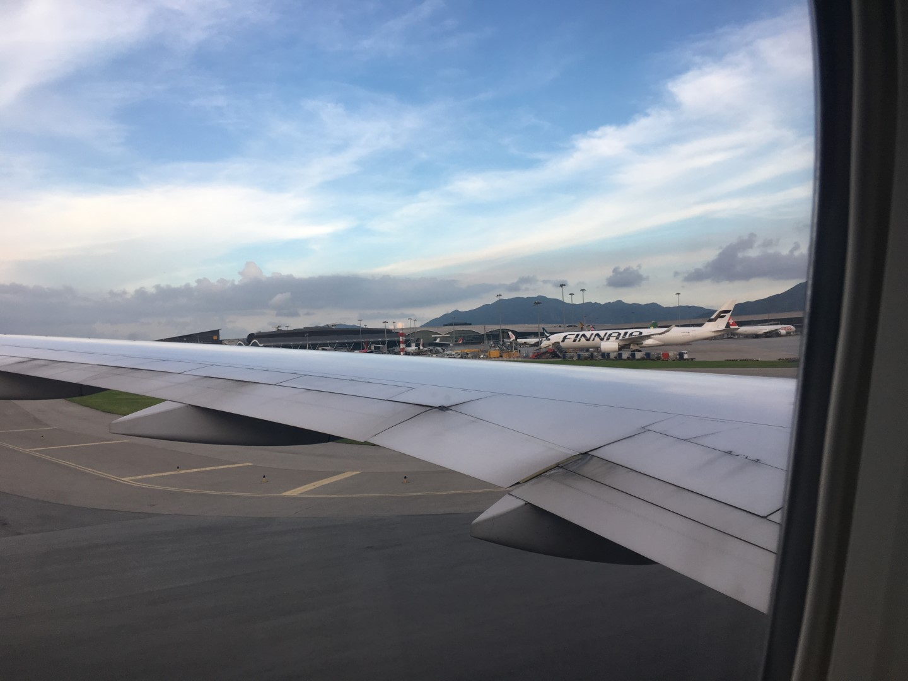 Food was ok. Flavor for the entrée of the first meal was quite spicy! Seats were definitely old, worn out, and they are definitely slimline! But the question is whether you want a 3-3-3 config with old seats, AVOD screen that doesn’t work, hard seats (Zodiac 5751 is quite hard when used since 2010) and wide aisles. Or whether you want a 3-4-3 config with new seats that are designed to cradle (link), new AVOD screen that’s much more responsive, and 1 less inch of recline. Service was enough for me on this flight (full can!). Finally, I don’t care about the AVOD screen because they’re going away. But the screens are really bad, I used my phone.
 For the return flight in August, I had aircraft N799UA nose #2799. The same flight attendant from my December 2017 flight was onboard serving
my aisle, so was the same purser from July who shared my name.
For the return flight in August, I had aircraft N799UA nose #2799. The same flight attendant from my December 2017 flight was onboard serving
my aisle, so was the same purser from July who shared my name.
I took the Airport Express to the airport, which features a free shuttle bus from the hotel to the airport and check-in at the subway station (which has a terrible catchment area minus the buses). This is in addition to the better seats on trains. This isn’t considered checking in at the airport, so if you’re flagged, you have to go to the airport with your bags.
Can we just appreciate the Air Belgium A340-300 (registration OO-ABA) to Charleroi here? I believe these flights have been empty, so this flight was discontinued soon.
Same with Delta. They’ve been flying Boeing 777’s to Seattle from Hong Kong. That flight was discontinued the next month. They were -200ER’s. Their plan is to focus on Seoul/ICN and rely on Korean Air. The aircraft is N861DA nose #7002.
 Here's N2846U (nose #2146) to San Francisco as UA862.
Here's N2846U (nose #2146) to San Francisco as UA862.

 I enjoy glass jetbridges (not that we’d need it too much). Some other gates in Hong Kong do not share glass jetbridges.
I enjoy glass jetbridges (not that we’d need it too much). Some other gates in Hong Kong do not share glass jetbridges.
View from the second-to-last row. Enjoy the Cathay Pacific A350-1000.
The overhead panels remain the same.
 Deep breath. It's gonna be gone soon. Another view of the abysmal AVOD screen with my iPhone 6S as reference. It’s not an iPhone 6S Plus. My hands are like that because I was trying to hold an iPhone still while taking a picture with my camera.
Deep breath. It's gonna be gone soon. Another view of the abysmal AVOD screen with my iPhone 6S as reference. It’s not an iPhone 6S Plus. My hands are like that because I was trying to hold an iPhone still while taking a picture with my camera.
 Food is served, with bread roll and quinoa salad with a few leaves.
Food is served, with bread roll and quinoa salad with a few leaves.
I had a Ginger Ale, they gave me a full can.
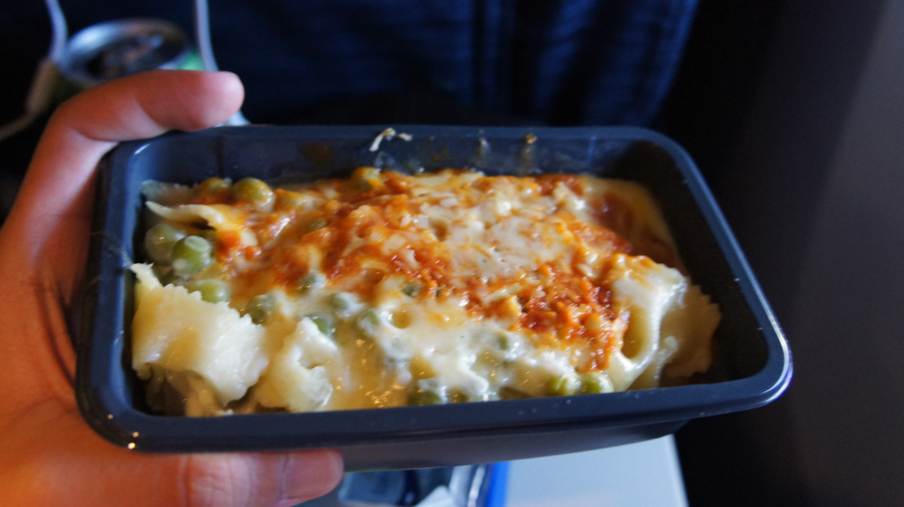 I chose the pasta, which was flavorful and filling minus the small size.
Ice cream served from Nestle. Save the spoon too. A wooden stick is not a spoon in my book.
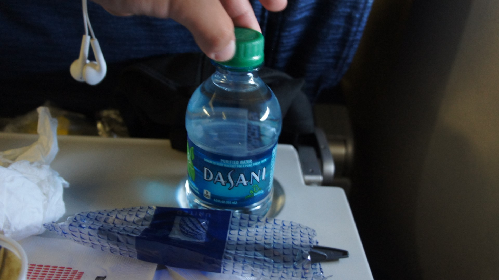 Water from Dasani.
Snacks were set up in the galley with leftover water, bread, and snack mixes.
Midflight snack was a sandwich and KitKat. Nothing too interesting minus the presentation.
Prearrival breakfast for lunch (brunch?). Entrée and cookie.
Tray size compared to the table. Similar trays were used for all meals.
Here is the quiche option. Good enough in flavor, but really dry.
And United seems to retain the airfones (I think that's what they're called?), whether they remain after the Polaris retrofit is gonna be another question.
Landing in Chicago early. Here is the flight status page.
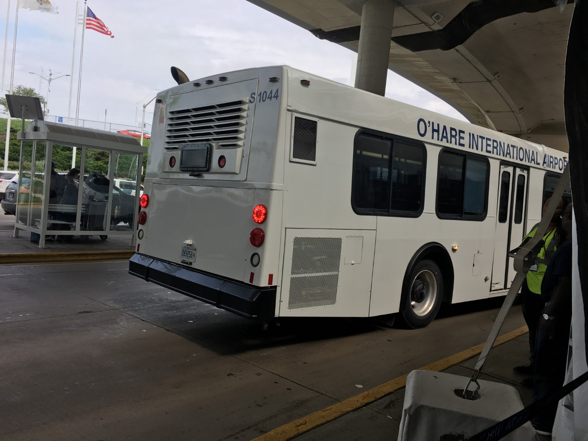
 Bus to terminals 1 through 3 while the ATS is out of service. It’s supposed to be temporary. I hope so.
Bus to terminals 1 through 3 while the ATS is out of service. It’s supposed to be temporary. I hope so.
Flight did its job: get me from Hong Kong to Chicago. And a sunrise/sunset (I missed the sunset because I was so tired I fell asleep). So here's what I got for a sunrise because I fell asleep.